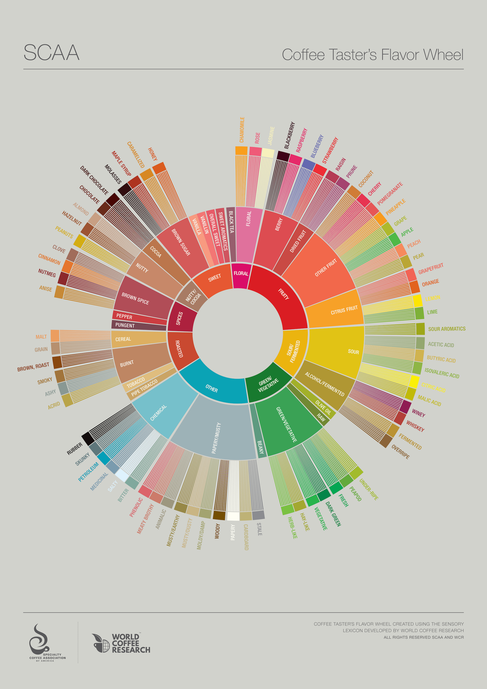

先不要急著講很細的風味
初學者杯測（cupping，也就是用固定沖煮方式聞香、啜吸、記錄風味）時，很容易一開始就想猜「是不是水蜜桃」。 但比較穩的做法是先問：這杯比較像花香、水果、甜感、烘烤調，還是有青綠、發酵、紙板、化學感？
內圈是大方向。大方向抓對了，後面的詞就比較不會亂跳。例如先確認是水果調，再判斷是莓果、柑橘或熱帶水果， 最後才決定要寫藍莓、檸檬、鳳梨或葡萄。
SCA Coffee Taster's Flavor Wheel
SCA（Specialty Coffee Association，精品咖啡協會）的風味輪（Flavor Wheel）不是要你背答案， 而是幫你把「喝到的模糊感覺」一步一步收斂成可溝通、可回顧的風味語言。

SCA-flavor-wheel/。本頁是非官方翻譯，僅供私人學習與筆記使用。
Reading Flow
初學者杯測（cupping，也就是用固定沖煮方式聞香、啜吸、記錄風味）時，很容易一開始就想猜「是不是水蜜桃」。 但比較穩的做法是先問：這杯比較像花香、水果、甜感、烘烤調，還是有青綠、發酵、紙板、化學感？
內圈是大方向。大方向抓對了，後面的詞就比較不會亂跳。例如先確認是水果調，再判斷是莓果、柑橘或熱帶水果， 最後才決定要寫藍莓、檸檬、鳳梨或葡萄。
一杯咖啡不一定只有一個風味。你可以同時記下「Fruity > Citrus Fruit > Lemon」和「Sweet > Brown Sugar > Honey」。 這代表它有檸檬般的明亮酸香，也有蜂蜜感的甜。
對烘豆覆盤來說，這比只寫「好喝」更有用。下一鍋你可以回頭比較：酸質有沒有更圓、甜感有沒有變清楚、 青草味是否退掉、烘烤味是否太重。
風味輪是語彙工具，不是分數工具。寫到「藥水、紙板、霉陳」不代表你失敗，而是你更精準地記錄了這杯的狀態。 先整理事實，再用烘焙曲線、杯測結果和下一鍋調整去驗證原因。
如果不確定，就寫比較保守的中圈詞。例如還分不出檸檬和萊姆時，先寫「柑橘類」就可以。
Practice
先記大方向：花香、水果、堅果、可可、香料、烘烤調。
觀察甜香、發酵感、草本感或紙板感是否變明顯。
把酸、甜、苦、口感和餘韻分開記，不要全部塞進同一句。
如果有青草、酸尖、悶味或焦苦，再對照乾燥期、一爆與發展時間。
Complete Index
下方列出圖上所有可見標籤。搜尋可以輸入英文或繁中；分類按鈕則用內圈大分類篩選。
Attribution
The Coffee Taster's Flavor Wheel by the SCA and WCR is licensed under Creative Commons Attribution-NonCommercial-NoDerivatives 4.0 International. 本頁的繁中詞彙是非官方翻譯，只作私人學習筆記；若要公開使用、印製或引用正式繁中版本，請以 SCA 官方授權版本為準。
參考：SCA Coffee Taster's Flavor Wheel 與 World Coffee Research Sensory Lexicon。